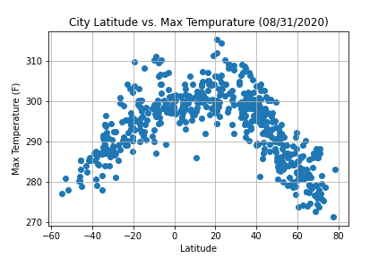

Summary: Latitude vs. X

The purpose of this project was to analyze how weather changes as you get close to the equator. To accomplish this analysis, we first pulled data from the OpenWeatherMap API to assemble a data on over 500 cities.
After assembleing the dataset, we used Matplolib to plot various aspects of teh weather vs. latitude. Factors we looked at included: temperatture, cloudiness, wind speed, and humidity. This site provides the source data and visualizations created as part of the analysis, as well as explanations and descriptions of any trends and correlations witnessed.